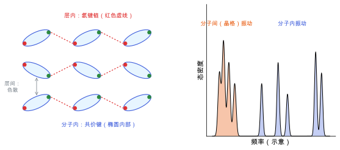

分子晶体与分子间作用
氢键、色散和静电怎样决定分子晶体的堆积，为什么分子晶体对弱相互作用特别敏感。
直观阅读需要
- 共价键、氢键、范德华作用的区别
- 晶体对称性与空间群
只是提示，不需要先读完才能往下看。
直觉直观解释
分子晶体由完整的分子组成，分子内部是强的共价键，分子之间是弱得多的相互作用：氢键、静电（偶极、四极）、色散 (dispersion)。
这带来一个能量尺度的分层：
- 分子内共价键：每个键几百 kJ/mol；
- 晶格能（把晶体拆成孤立分子所需能量）：通常几十到一百多 kJ/mol（每摩尔分子）；
- 多晶型之间的能量差：通常只有几 kJ/mol。
CSP 关心的是第三层，它比第一层小两个数量级。于是分子间作用的任何一点误差，都可能改变多晶型排序。

| 符号 | 是什么 | 图里对应 |
|---|---|---|
| 椭圆 | 一个分子 | 左图 |
| 红色虚线 | 氢键 | 左图层内 |
| 层间距 | 色散为主的方向 | 左图层与层之间 |
| g(\omega) | 振动态密度 | 右图纵轴 |
| 低频区 | 分子间（晶格）振动 | 右图左侧 |
| 高频区 | 分子内振动 | 右图右侧 |
定义与公式数学与推导
氢键与图集记号
氢键是分子晶体中方向性最强的作用，常决定一维链、二维层的基本模式。Etter 提出的图集记号 (graph set) 用 G^{a}_{d}(n) 描述氢键模式 [Etter et al. 1990]：
其中 G 是模式类型（C 链、R 环、D 有限二聚、S 分子内）；a 是受体数；d 是给体数；n 是这个模式中的原子数。例如羧酸二聚体是 R^{2}_{2}(8)。比较多晶型时，先看氢键图集是否相同，常能快速判断是不是同一种堆积。
色散
色散是长程的、始终吸引的作用，在没有强氢键的方向上（如层间）起主导作用。半局域泛函（如 PBE）几乎不含色散，不加修正会让分子晶体过度膨胀甚至不结合，所以必须加色散修正，如 D3 或多体色散 (MBD)（见 色散校正）[Grimme 2010] [Tkatchenko et al. 2012]。多体效应对多晶型排序可以有不可忽略的影响 [Beran 2016]。
Z 与 Z'
Z 是晶胞中的分子数，Z' 是不对称单元中的独立分子数，Z = Z' \times（空间群一般位置的多重度）。Z' > 1 的结构让 CSP 搜索空间显著变大（见 晶体结构预测：搜索与排序）。
两类振动
分子晶体的振动谱自然分为两部分：低频的分子间振动（整个分子的平动和转动，通常在几百 cm⁻¹ 以下）和高频的分子内振动。前者对晶胞非常敏感，主导了振动熵和热膨胀（见 自由能与熵、准简谐近似与热膨胀）。
在本研究线里的样子对应与边界
- 甘氨酸是两性离子：在晶体中以 ⁺H₃N–CH₂–COO⁻ 的形式存在，分子间是强的 N–H···O 氢键加上很大的静电作用。孤立的两性离子在气相并不稳定，计算晶格能时要小心参考态的选择。
- β-甘氨酸的压电：压电响应来自外加电场下带电基团和氢键网络的形变，所以对氢键几何和色散描述都敏感（见 压电张量、质子归属：盐与共晶）。
- MLIP 的难点：分子内力很大、分子间力很小，MLIP 的力误差如果主要来自分子内，可能掩盖分子间的误差。验证时应单独看分子间（刚体平动和转动）方向的力，或者直接比较晶格能和多晶型能量差（见 机器学习势）。
- 长程静电：带电的两性离子让截断半径内的局域模型可能漏掉长程静电（见 机器学习势中的长程静电与电场响应）。
常见坑对应与边界
- 不加色散：PBE 得到的晶胞体积和晶格能都明显偏差。
- 只关注氢键：在层状结构中，层间的色散常常决定多晶型排序。
- 用分子内的精度要求代替分子间：MLIP 总力误差看起来很小，但分子间的力误差相对分子间力本身可能很大。
- 晶格能直接和升华焓比较：漏掉了 2RT 和振动修正。
- 忽略构象变化：柔性分子在不同多晶型中构象不同，构象能差和堆积能差会互相抵消。
检验自己对应与边界
子条目
- 质子归属：盐与共晶酸碱分子晶体里质子停在哪一侧（盐还是共晶），怎样判断，以及它对结构和性质的影响。
参考资料
论文Beran 2016
尚未实际查阅，目前只是拟查阅书目
基准研究Reilly & Tkatchenko 2013
尚未实际查阅，目前只是拟查阅书目
论文Etter et al. 1990
尚未实际查阅，目前只是拟查阅书目
论文Price 2014
S. L. Price, Predicting crystal structures of organic compounds, Chem. Soc. Rev. 43, 2098 (2014)
尚未实际查阅，目前只是拟查阅书目
论文Grimme 2010
尚未实际查阅，目前只是拟查阅书目
论文Tkatchenko et al. 2012
尚未实际查阅，目前只是拟查阅书目
分类晶体与固体 · 概念 · 研究线：结构预测与能量景观 · 状态：草稿